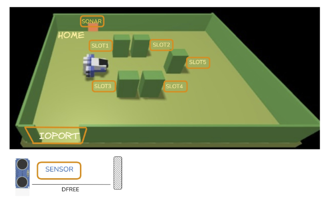

Goal Sprint0: Analisi dei Requisiti
Introduction
A Maritime Cargo shipping company (fron now on, simply company) intends to automate the operations of load of containers in the ship’s cargo hold (or simply hold). To this end, the company plans to employ a Differential Drive Robot (from now, called cargorobot).
The hold is a rectangular, flat area with an Input/Output port (IOPort). The area provides 4 slots to store the
containers and a slot named slot5.

In the picture above:
- The slots1-4 depict the hold areas reserved to store one container each,
- The slots5 depicts an area, where the cargorobot must temporarily store a container, before to place it in one of the slots1-4. During temporary storage, a ‘marker’ device labels the container with an identification barcode and signals when this marking activity is completed.
- The IOPort is a device with a pushbutton and a display. The pushbutton is pressed by the customer in order to to send a request to load a container on the cargo. The display is used to show the answer to the request and to show the current state of the hold.
-
The sensor associated to the IOPort is a device (a sonar) used to detect the presence of a container, when it
measures a distance D, such that
D < DFREE/2, during a reasonable time (e.g. 3 secs).
Requirements
The company asks us to build service named cargoservice that should work as follows.
The cargoservice is able to receive a request to load a container sent by some customer by using the pushbutton of the IOPort.
-
It sends the answer
retrylater, if the IOPort is currently occupied by a container or if the system is Out of service -
It rejects the request when the hold is already full, i.e. the
slots1-4are already occupied. - Otherwise, it considers the system as engaged, detects a free slot and returns as answer the name of such a reserved slot. While engaged, the system must blink a Led.
When the request to load is accepted, the customer must move the container in the sensor area within prefixed amount of time (e.g. 30 secs), otherwise the systems becomes disengaged. Then, the cargoservice uses the cargorobot to move the container from the IOPort to the slot5 (for marking the container) and then to the reserved slot.
The service must also show on the display on the IOPort:
- the current state of the hold
- the message ‘Service working’, when it is all is going well
-
the message ‘Out of service’ if the sonar sensor measures a distance
D > DFREEfor at least 3 secs (perhaps a failure of the sonar).
Requirement analysis
Sistema cargoservice: è il software centrale responsabile della logica di business e del coordinamento. Il sistema comprende le seguenti entità:
cargorobot (DDR)
È un entità computazionale attiva che modella il comportamento del robot fisico a guida differenziale (DDR) operante all'interno della stiva ed è modellata come attore. Riceve ed esegue i comandi di macro-movimentazione inviati dall'orchestratore centrale per navigare sequenzialmente tra l'IOPort, lo slot 5 e gli alloggiamenti finali (slot 1-4). Dal punto di vista cinematico, si interfaccia direttamente con il servizio esterno robotsmart26 messo a disposizione dal committente per colmare l'abstraction gap. Questo modulo solleva il nostro software dall'onere di calcolare i comandi di basso livello (avanza, ruota, stop), poiché riceve in input le coordinate cartesiane di destinazione che calcola autonomamente il percorso ottimale sulla griglia. La responsabilità dell'orchestrazione logica della missone rimane tuttavia in capo al cargorobot.
IOPort
Rappresenta il punto di interazione fisico/logico posizionato all'ingresso della stiva, strutturato come un nodo computazionalmente indipendente che espone una Web GUI. Gestisce i flussi di input e output utente disaccoppiandoli dalla logica aziendale core.
- Il suo componente di input (pushbotton) è un elemento reattivo che cattura l'interazione del cliente (pressione del pulsante) e la traduce in una richiesta formale di carico (loadrequest) indirizzata verso il sistema
- Il suo componente di output (display) si comporta come un terminale passivo incaricato di effettuare il rendering visivo delle informazioni trasmesse dal servizio. Mostra in tempo reale lo stato di occupazione corrente dei quattro slot e i messaggi operativi critici ("Service working" o "Out of service").
Sensore / Sonar
Si tratta di un'entità software attiva, un dispositivo fisico di telemetria posizionato strategicamente in corrispondenza dell'area di accesso dell'IOPort. Effettua un campionamento continuo dello spazio antistante, calcolando la distanza D dall'ostacolo più vicino. Questo software di basso livello trasmette i dati grezzi sottoforma di stringhe formattate come distance(DIRECTION, D). Tali letture vegono inviate al sistema per consentire la verifica dei vincoli temporali e di soglia:
- se una misurazione D < DFREE/2 persiste per un intervallo temporale ragionevole (es. almeno 3 secondi), viene validata la presenza fisica di un carico da elaborare;
- se una misurazione D > DFREE persiste per più di 3 secondi, viene notificata una condizione di potenziale guasto hardware (stato Out of service).
Domanda al committente: il software che gestisce il sonar è già disponibile?
Dispositivo Marker (Slot 5)
Si tratta di un dispositivo di scansione e identificazione localizzato in corrispondenza dello slot 5, l'area riservata alla sosta temporanea. Si attiva non appena viene segnalata la deposizione di un container nello slot 5, avviando un'operazione automatica di etichettatura per applicare un codice a barre identificativo sul carico. Il dispositivo trattiene logicamente il flusso operativo per un tempo fisso (durata della marcatura) e, una volta completata l'operazione, genera un messaggio di notifica. Trattandosi di un'entità integrata nello stesso nodo logico di cargoservice, questo messaggio di sblocco viene trasmesso internamente per segnalare al robot che può prelevare il container marcato e procedere verso la destinazione finale.
Stiva (Hold)
Rappresenta un componente software passivo implementato come un oggetto Java puro (POJO) che funge da mappa logica in memoria dello stato della stiva. Modella e traccia la situazione dei quattro slot di deposito principali (slot 1-4) e dello slot 5 temporaneo. Ciascun alloggiamento viene catalogato attraverso tre stati logici ben definiti: free (disponibile), reserved (assegnato a una richiesta accettata, ma non ancora occupato fisicamente dal container) e occupied (container depositato). L'entità incapsula la logica algoritmica per determinare se la stiva è satura (isFull()) e individua e riserva il primo slot disponibile in ordine sequenziale non appena viene convalidata una nuova richiesta di accesso. HOME: da completare copiando da uno vecchio
Led
Rappresenta un'entità software passiva di output associata a un attuatore luminoso fisico. La sua responsabilità è quella di fornire una segnalazione visiva immediata dello stato operativo del sistema verso l'esterno. Il suo comportamento è strettamente vincolato alle transizioni di stato del servizio centrale: deve attivare la modalità lampeggiante per indicare che il sistema si trova in uno stato di impegno lavorativo, mantenendo tale comportamento durante tutte le fasi di trasferimento dei container.
Riceve le richieste dalla IOPort. Consulta lo stato della stiva per accettare (riservando uno slot) o rifiutare il carico. Gestisce i timeout di presenza container (30 secondi) e comanda il comportamento del robot e del led di segnalazione.
Problem analysis
Test plans
Project
Testing
Deployment
Maintenance